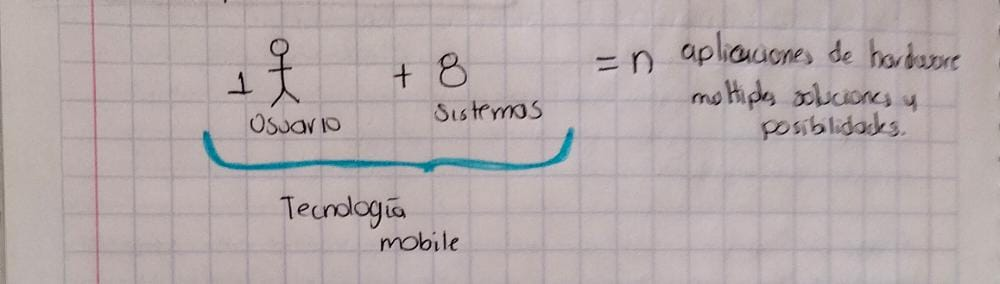

La empresa Huawei se ha mantenido actualizandose con sus aplicaciones en la actualidad la tecnología
mobile son los que han captado mayor demanda debido al suministro de usuarios.

La creación de servicios de apps moviles y su desarrollo dentro de la empresa Huawei a sido más facil debido
a que cuenta con 69 librerias aproximadamente que ofrece para desarrollo de aplicaciones.
La aplicaión de estrategia de software HMS, van enfocados a Machine Learning y IA.
Modelo predictivo de rendimiento académico
Ing. Jairo Acosta Solano
La importancia de la calidad de enseñanza de los niveles básicos de la education a educación mediu-superior.
El analisis de rendimiento acadentico se llevo acabo en la
prueba del saber 11° donde el rendimento de estudio.
y la metodoligía engloban toda la mineria de datos, ya que debido a su aplicacion
son muchos datos a procesar.
La prueba debe de estar deacuerdo a los factores que no discriminan a las
regiones y atributos socioeconomicos.
CRISP-DM es lq metodología que se usa así como decisión PART, redes neuronales
esto se evaluara deacuerdo a metricas para el desempeño.
Preprocesado Tokenizacion y obtencion de Embendding de textos en el procesamiento del lenguaje natural
Ing. Juan Pablo Osuna Bonilla
Preprocesador ,tokenzacion dan obtención de ebeddings de textos en el proceso de lenguaje natural
PLN: procesamiento de lenguaje natural.
USO:
• Esquema de texto
• Procesamiento de datos
• Spech to text
Herramientas : bibliotecas de código abierto
Ejemplos :
• Intensidad de pxil en valores numéricos
• Ondas analógicas previamente digitalizadas
Se puede realizar :
• Codificar caracteres
• Codificar palabras
Token: bloques que conforman la secuencia de datos
Tokenización: unidad de proceso de división.
Los vectores 3D se encargan de convertir los datos de texto en algoritmos PLN
Diseño de dispositivos electrónicos, convertidores de energía, refrigeración de satelites con IA
y diseño de controladores de altitud con IA.
Dr. Juan Fernando Garcia Mejia
Actualmente se encuentran realizando en la agencia espacial mexicana que se ubica en Atlacomulco nos hablo
acerca del diseño que deben tener los dispositivos electrónicos para poderlos convertir en energía.
Tambien nos comento de la importancia que tienen los satélites en el mundo y que gracias a ellos existen telecomunicaciones, comento que México no tiene tantos satélites ya que son costosos,